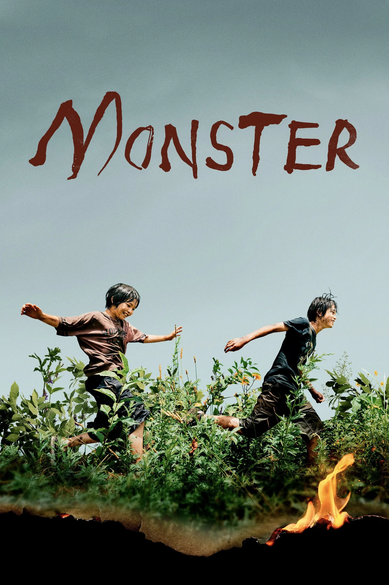
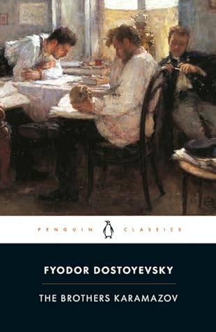
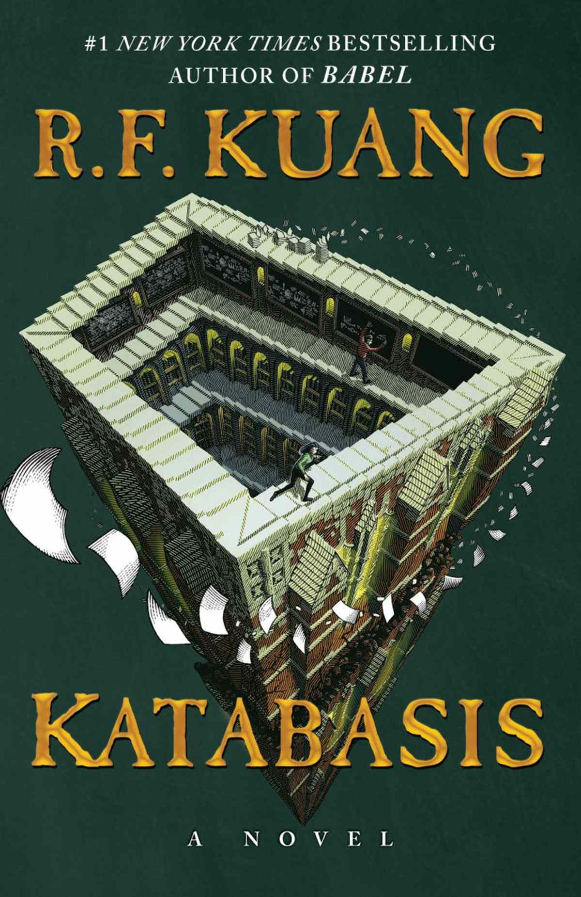

My Favorite
Movies/Series
I really love consuming media on the internet. Here are some movies that really left an impression on me.




My Favorite
Books/Novels
I'd like to call myself a bookworm. Nothing beats the feeling of getting lost in a good story. These are the books that I would recommend you.



